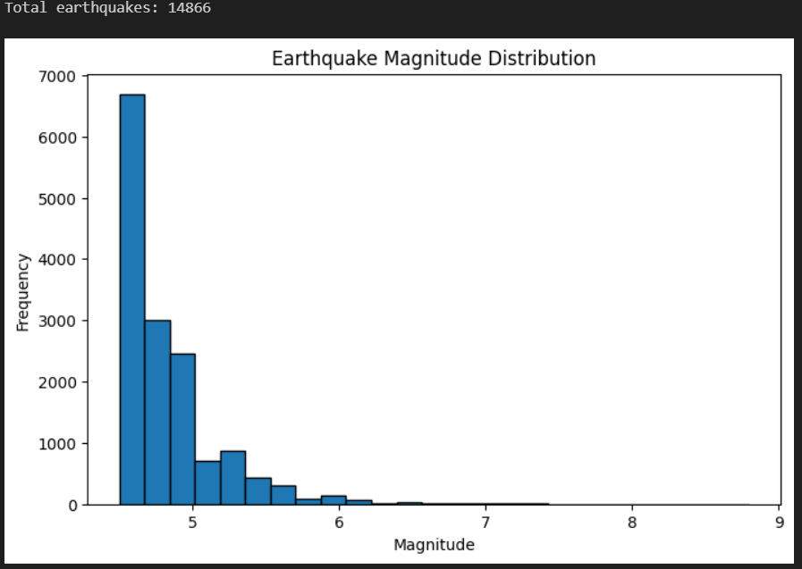
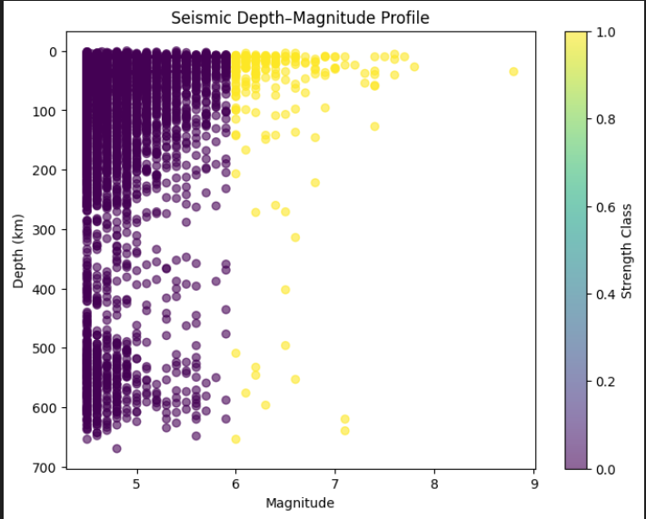
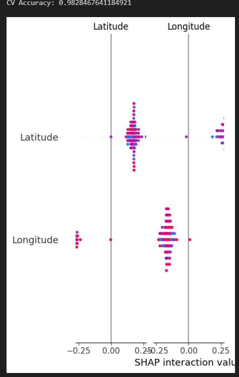

Machine Learning • Seismology • Geospatial Analysis
This GeoAI project explores how machine learning and geospatial analysis can be used to study earthquake patterns and classify earthquake strength using global seismic data. The model analyzes spatial location and focal depth to identify patterns in earthquake energy release.
🔴 Strong Earthquake (Magnitude ≥ 6)
🔵 Weak Earthquake (Magnitude < 6)



View the complete machine learning workflow, code, and geological interpretation on GitHub.